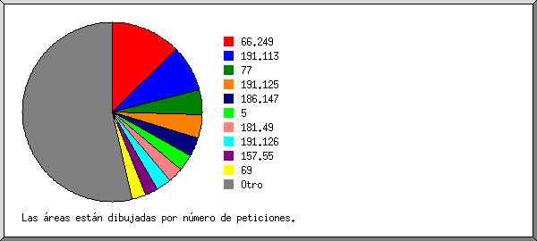
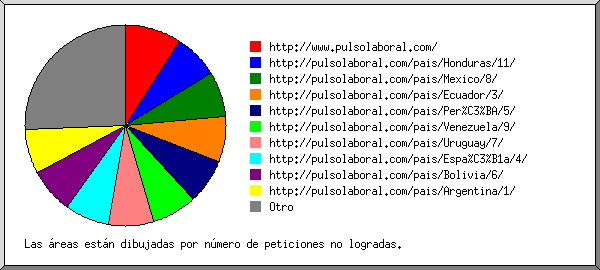
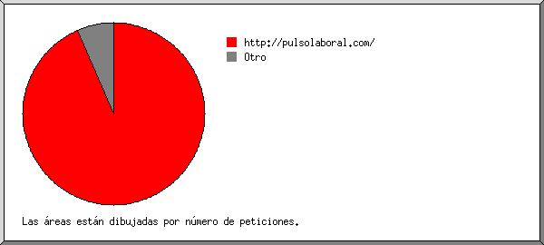
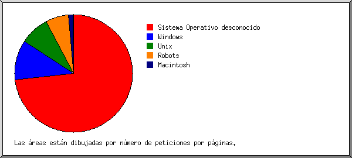
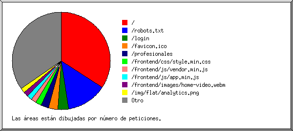

Estadísticas del servidor Web de pulsolaboral.com
Estadísticas del servidor Web de pulsolaboral.com
Programa iniciado a las Vie/30/Sep/2016 8:02 am.
Análisis de peticiones del Vie/05/Feb/2016 8:23 pm al Vie/30/Sep/2016 7:13 am (237.45 días).
Estadísticas del servidor Web de pulsolaboral.comPrograma iniciado a las Vie/30/Sep/2016 8:02 am.
Análisis de peticiones del Vie/05/Feb/2016 8:23 pm al Vie/30/Sep/2016 7:13 am (237.45 días).
(Ir a: Arriba | Resumen general | Informe mensual | Resumen diario | Resumen horario | Informe de dominios | Informe de organización | Informe de remitentes redirecionados | Informe de errores de remitentes | Informe de sitios remitentes | Reporte de Palabras de Buscadas | Informe de navegadores | Resumen de navegadores | Informe de Sistemas Operativos | Informe de códigos de estado | Informe de tamaño de archivos | Informe de Tipos de Archivo | Informe de Directorios | Informe de peticiones)
Los números entre paréntesis se refieren a 7 días al 30/Sep/2016 8:02 am.
Peticiones exitosas: 18,670 (462)
Promedio de peticiones exitosas por día: 78 (65)
Peticiones exitosas por página: 5,029 (174)
Promedio de peticiones exitosas por página por día: 21 (24)
Peticiones no logradas: 3,321 (7)
Peticiones redireccionadas: 16,276 (4)
Archivos diferentes solicitados: 309 (25)
Sistemas diferentes atendidos: 1,916 (26)
Transferencia total: 902.54 megabytes (24.43 megabytes)
Promedio de transferencia por día: 3.80 megabytes (3.49 megabytes)
(Ir a: Arriba | Resumen general | Informe mensual | Resumen diario | Resumen horario | Informe de dominios | Informe de organización | Informe de remitentes redirecionados | Informe de errores de remitentes | Informe de sitios remitentes | Reporte de Palabras de Buscadas | Informe de navegadores | Resumen de navegadores | Informe de Sistemas Operativos | Informe de códigos de estado | Informe de tamaño de archivos | Informe de Tipos de Archivo | Informe de Directorios | Informe de peticiones)
Cada unidad ( ) representa 25 peticiones por páginas o fracción.
) representa 25 peticiones por páginas o fracción.
| mes | No. pet. | Págs. | |
|---|---|---|---|
| Feb 2016 | 2107 | 367 |    |
| Mar 2016 | 2053 | 646 |  |
| Abr 2016 | 2770 | 643 | |
| May 2016 | 2595 | 643 | |
| Jun 2016 | 2434 | 647 | |
| Jul 2016 | 2169 | 613 | |
| Ago 2016 | 2288 | 674 | |
| Sep 2016 | 2254 | 796 |  |
Mes de mayor tráfico: Sep 2016 (796 peticiones por páginas).
(Ir a: Arriba | Resumen general | Informe mensual | Resumen diario | Resumen horario | Informe de dominios | Informe de organización | Informe de remitentes redirecionados | Informe de errores de remitentes | Informe de sitios remitentes | Reporte de Palabras de Buscadas | Informe de navegadores | Resumen de navegadores | Informe de Sistemas Operativos | Informe de códigos de estado | Informe de tamaño de archivos | Informe de Tipos de Archivo | Informe de Directorios | Informe de peticiones)
Cada unidad () representa 25 peticiones por páginas o fracción.
| día | No. pet. | Págs. | |
|---|---|---|---|
| Dom | 2093 | 651 | |
| Lun | 3088 | 711 | |
| Mar | 3584 | 795 | |
| Mié | 2753 | 697 | |
| Jue | 2973 | 865 | |
| Vie | 2249 | 648 | |
| Sáb | 1930 | 662 | |
(Ir a: Arriba | Resumen general | Informe mensual | Resumen diario | Resumen horario | Informe de dominios | Informe de organización | Informe de remitentes redirecionados | Informe de errores de remitentes | Informe de sitios remitentes | Reporte de Palabras de Buscadas | Informe de navegadores | Resumen de navegadores | Informe de Sistemas Operativos | Informe de códigos de estado | Informe de tamaño de archivos | Informe de Tipos de Archivo | Informe de Directorios | Informe de peticiones)
Cada unidad () representa 8 peticiones por páginas o fracción.
| hr | No. pet. | Págs. | |
|---|---|---|---|
| 0 | 647 | 197 | |
| 1 | 540 | 185 | |
| 2 | 620 | 286 | |
| 3 | 482 | 167 | |
| 4 | 498 | 147 | |
| 5 | 541 | 202 | |
| 6 | 487 | 165 | |
| 7 | 501 | 195 | |
| 8 | 668 | 167 | |
| 9 | 741 | 207 | |
| 10 | 821 | 210 | |
| 11 | 713 | 201 | |
| 12 | 896 | 222 | |
| 13 | 657 | 220 | |
| 14 | 791 | 152 | |
| 15 | 837 | 199 | |
| 16 | 828 | 151 | |
| 17 | 1070 | 190 | |
| 18 | 1612 | 252 | |
| 19 | 1276 | 311 | |
| 20 | 718 | 214 | |
| 21 | 1048 | 259 | |
| 22 | 897 | 273 | |
| 23 | 781 | 257 | |
(Ir a: Arriba | Resumen general | Informe mensual | Resumen diario | Resumen horario | Informe de dominios | Informe de organización | Informe de remitentes redirecionados | Informe de errores de remitentes | Informe de sitios remitentes | Reporte de Palabras de Buscadas | Informe de navegadores | Resumen de navegadores | Informe de Sistemas Operativos | Informe de códigos de estado | Informe de tamaño de archivos | Informe de Tipos de Archivo | Informe de Directorios | Informe de peticiones)
Listado de los dominios, ordenados por cantidad de tráfico.
| No. pet. | %bytes | dominio |
|---|---|---|
| 18670 | 100% | [direcciones numéricas sin resolver] |
(Ir a: Arriba | Resumen general | Informe mensual | Resumen diario | Resumen horario | Informe de dominios | Informe de organización | Informe de remitentes redirecionados | Informe de errores de remitentes | Informe de sitios remitentes | Reporte de Palabras de Buscadas | Informe de navegadores | Resumen de navegadores | Informe de Sistemas Operativos | Informe de códigos de estado | Informe de tamaño de archivos | Informe de Tipos de Archivo | Informe de Directorios | Informe de peticiones)

Listado de las 20 primeras organizaciones por número de peticiones, ordenadas por número de peticiones.
| No. pet. | %bytes | organización |
|---|---|---|
| 2736 | 13.01% | 66.249 |
| 1033 | 2.04% | 77 |
| 960 | 8.90% | 186.147 |
| 728 | 0.80% | 69 |
| 684 | 6.91% | 181.49 |
| 571 | 0.42% | 180.76 |
| 564 | 1.42% | 157.55 |
| 544 | 0.61% | 5 |
| 458 | 6.33% | 207.102 |
| 407 | 1.06% | 207.46 |
| 358 | 0.36% | 51 |
| 347 | 4.54% | 190.240 |
| 261 | 0.73% | 40 |
| 240 | 0.20% | 144.76 |
| 230 | 0.10% | 173.252 |
| 223 | 1.96% | 208.91 |
| 221 | 2.64% | 181.51 |
| 220 | 0.14% | 46 |
| 197 | 0.16% | 181.162 |
| 192 | 0.39% | 104 |
| 7496 | 47.28% | [no listadas: 356 organizaciones] |
(Ir a: Arriba | Resumen general | Informe mensual | Resumen diario | Resumen horario | Informe de dominios | Informe de organización | Informe de remitentes redirecionados | Informe de errores de remitentes | Informe de sitios remitentes | Reporte de Palabras de Buscadas | Informe de navegadores | Resumen de navegadores | Informe de Sistemas Operativos | Informe de códigos de estado | Informe de tamaño de archivos | Informe de Tipos de Archivo | Informe de Directorios | Informe de peticiones)

Listado de los 30 primeros URLs remitentes por número de peticiones redireccionadas, ordenados por número de peticiones redireccionadas.
(Ir a: Arriba | Resumen general | Informe mensual | Resumen diario | Resumen horario | Informe de dominios | Informe de organización | Informe de remitentes redirecionados | Informe de errores de remitentes | Informe de sitios remitentes | Reporte de Palabras de Buscadas | Informe de navegadores | Resumen de navegadores | Informe de Sistemas Operativos | Informe de códigos de estado | Informe de tamaño de archivos | Informe de Tipos de Archivo | Informe de Directorios | Informe de peticiones)

Listado de los 30 primeros URLs de remitentes por número de peticiones no logradas, ordenados por número de peticiones no logradas.
(Ir a: Arriba | Resumen general | Informe mensual | Resumen diario | Resumen horario | Informe de dominios | Informe de organización | Informe de remitentes redirecionados | Informe de errores de remitentes | Informe de sitios remitentes | Reporte de Palabras de Buscadas | Informe de navegadores | Resumen de navegadores | Informe de Sistemas Operativos | Informe de códigos de estado | Informe de tamaño de archivos | Informe de Tipos de Archivo | Informe de Directorios | Informe de peticiones)

Listado de los 30 primeros sitios remitentes por número de peticiones, ordenados por número de peticiones.
| No. pet. | sitio |
|---|---|
| 6672 | http://pulsolaboral.com/ |
| 44 | http://www.pulsolaboral.com/ |
| 25 | https://www.google.com.co/ |
| 23 | http://burger-imperia.com/ |
| 20 | https://www.google.com.mx/ |
| 16 | https://www.facebook.com/ |
| 15 | https://www.google.com/ |
| 14 | http://whois.domaintools.com/ |
| 10 | http://45.79.81.203:65080/ |
| 8 | http://www.google.com/ |
| 7 | http://google.com/ |
| 6 | http://gfiquwerutijfmn474859378tug9keofmi49.com/ |
| 6 | http://pizza-tycoon.com/ |
| 6 | http://www.netcraft.com/ |
| 5 | https://www.google.co.in/ |
| 5 | https://www.google.cl/ |
| 4 | https://www.google.co.th/ |
| 4 | http://m.facebook.com/ |
| 4 | http://www.google.com.mx/ |
| 4 | http://domaincrawler.com/ |
| 3 | http://ensayando.pulsolaboral.com/ |
| 3 | http://hundejo.com/ |
| 3 | http://uptime.com/ |
| 3 | http://l.facebook.com/ |
| 3 | https://www.google.es/ |
| 3 | http://luisrob.pulsolaboral.com/ |
| 3 | https://www.google.co.uk/ |
| 3 | https://www.google.com.ar/ |
| 3 | https://www.google.com.br/ |
| 2 | http://hvd-store.com/ |
| 54 | [no listados: 48 sitios] |
(Ir a: Arriba | Resumen general | Informe mensual | Resumen diario | Resumen horario | Informe de dominios | Informe de organización | Informe de remitentes redirecionados | Informe de errores de remitentes | Informe de sitios remitentes | Reporte de Palabras de Buscadas | Informe de navegadores | Resumen de navegadores | Informe de Sistemas Operativos | Informe de códigos de estado | Informe de tamaño de archivos | Informe de Tipos de Archivo | Informe de Directorios | Informe de peticiones)

Listado de las palabras buscadas, ordenadas por número de peticiones.
| No. pet. | término buscado |
|---|---|
| 4 | pulsolaboral.com |
| 1 | pulsolaboral |
| 1 | arancibia |
| 1 | mosquera |
| 1 | pablo |
(Ir a: Arriba | Resumen general | Informe mensual | Resumen diario | Resumen horario | Informe de dominios | Informe de organización | Informe de remitentes redirecionados | Informe de errores de remitentes | Informe de sitios remitentes | Reporte de Palabras de Buscadas | Informe de navegadores | Resumen de navegadores | Informe de Sistemas Operativos | Informe de códigos de estado | Informe de tamaño de archivos | Informe de Tipos de Archivo | Informe de Directorios | Informe de peticiones)

Listado de los 40 primeros navegadores por número de peticiones por páginas, ordenados por número de peticiones por páginas.
| No. pet. | Págs. | Navegador |
|---|---|---|
| 3265 | 1359 | Mozilla/5.0 (compatible; MJ12bot/v1.4.5; http://www.majestic12.co.uk/bot.php?+) |
| 2343 | 728 | Mozilla/5.0 (compatible; Googlebot/2.1; +http://www.google.com/bot.html) |
| 1184 | 501 | Mozilla/5.0 (compatible; bingbot/2.0; +http://www.bing.com/bingbot.htm) |
| 475 | 475 | Mozilla/5.0 (compatible; Baiduspider/2.0; +http://www.baidu.com/search/spider.html) |
| 412 | 169 | Mozilla/5.0 (compatible; YandexBot/3.0; +http://yandex.com/bots) |
| 164 | 147 | Mozilla/5.0 (Linux; Android 6.0.1; Nexus 5X Build/MMB29P) AppleWebKit/537.36 (KHTML, like Gecko) Chrome/41.0.2272.96 Mobile Safari/537.36 (compatible; Googlebot/2.1; +http://www.google.com/bot.html) |
| 600 | 100 | Mozilla/5.0 (X11; Linux x86_64) AppleWebKit/537.36 (KHTML, like Gecko) Chrome/38.0.2125.101 Safari/537.36 |
| 105 | 84 | Safari/11601.6.17 CFNetwork/760.5.1 Darwin/15.5.0 (x86_64) |
| 80 | 80 | python-requests/2.9.0 |
| 92 | 74 | Safari/11601.3.9 CFNetwork/760.2.6 Darwin/15.2.0 (x86_64) |
| 54 | 40 | Mozilla/5.0 (Windows NT 6.1; WOW64) AppleWebKit/537.36 (KHTML, like Gecko) Chrome/36.0.1985.125 Safari/537.36 |
| 36 | 36 | Mozilla/5.0 (X11; Linux x86_64) AppleWebKit/537.36 (KHTML, like Gecko) Chrome/37.0.2062.120 Safari/537.36 |
| 54 | 31 | Mozilla/5.0 (Windows NT 6.3; WOW64; rv:28.0) Gecko/20100101 Firefox/28.0 |
| 28 | 28 | Mechanize/2.7.3 Ruby/1.9.3p551 (http://github.com/sparklemotion/mechanize/) |
| 156 | 24 | Mozilla/5.0 (compatible; spbot/5.0.2; +http://OpenLinkProfiler.org/bot ) |
| 25 | 24 | Mozilla/5.0 (Windows NT 10.0; WOW64) AppleWebKit/537.36 (KHTML, like Gecko) Chrome/46.0.2490.80 Safari/537.36 |
| 32 | 22 | Mozilla/5.0 (iPhone; CPU iPhone OS 8_3 like Mac OS X) AppleWebKit/600.1.4 (KHTML, like Gecko) Version/8.0 Mobile/12F70 Safari/600.1.4 (compatible; Googlebot/2.1; +http://www.google.com/bot.html) |
| 35 | 20 | Mozilla/5.0 (Windows NT 6.1; compatible; BDCbot/1.0; +http://ecommerce.bigdatacorp.com.br/faq.aspx) ppleWebKit/537.36 (KHTML, like Gecko) Chrome/41.0.2272.118 Safari/537.36 |
| 89 | 20 | Mozilla/5.0 (compatible; Exabot/3.0; +http://www.exabot.com/go/robot) |
| 25 | 20 | Mozilla/5.0 (Windows NT 6.0; rv:34.0) Gecko/20100101 Firefox/34.0 |
| 18 | 18 | Mozilla/5.0 (Windows NT 6.1; WOW64) AppleWebKit/537.36 (KHTML, like Gecko) Chrome/40.0.2214.115 Safari/537.36 |
| 20 | 16 | Safari/11601.7.7 CFNetwork/760.6.3 Darwin/15.6.0 (x86_64) |
| 133 | 16 | Mozilla/5.0 (compatible; Yahoo! Slurp; http://help.yahoo.com/help/us/ysearch/slurp) |
| 47 | 15 | Mozilla/5.0 (compatible; oBot/2.3.1; http://filterdb.iss.net/crawler/) |
| 60 | 15 | Mozilla/5.0 AppleWebKit/537.36 (KHTML, like Gecko; Google Web Preview Analytics) Chrome/27.0.1453 Safari/537.36 (compatible; Googlebot/2.1; +http://www.google.com/bot.html) |
| 50 | 15 | Mozilla/5.0 (Windows NT 10.0; WOW64) AppleWebKit/537.36 (KHTML, like Gecko) Chrome/49.0.2623.87 Safari/537.36 |
| 28 | 14 | Mozilla/5.0 (Windows; U; Windows NT 5.1; en; rv:1.9.0.13) Gecko/2009073022 Firefox/3.5.2 (.NET CLR 3.5.30729) SurveyBot/2.3 (DomainTools) |
| 28 | 14 | Mozilla/5.0 (Windows NT 6.1; rv:6.0) Gecko/20110814 Firefox/6.0 Google Favicon |
| 15 | 14 | Mozilla/5.0 (Windows NT 6.1; WOW64) AppleWebKit/537.36 (KHTML, like Gecko) Chrome/42.0.2311.152 Safari/537.36 |
| 28 | 13 | Mozilla/5.0 (X11; Linux x86_64) AppleWebKit/537.36 (KHTML, like Gecko) Chrome/49.0.2623.75 Safari/537.36 Google Favicon |
| 12 | 12 | Mozilla/5.0 (Windows NT 6.1; WOW64) AppleWebKit/537.36 (KHTML, like Gecko) Chrome/31.0.1650.57 Safari/537.36 |
| 12 | 12 | Mozilla/5.0 (Windows; U; Windows NT 5.1; en-US; rv:1.9.2) Gecko/20100115 Firefox/3.6 |
| 14 | 11 | Lynx/2.8.5rel.1 libwww-FM/2.15FC SSL-MM/1.4.1c OpenSSL/0.9.7e-dev |
| 65 | 10 | Mozilla/5.0 (compatible; spbot/5.0.1; +http://OpenLinkProfiler.org/bot ) |
| 39 | 10 | Mozilla/5.0 (Windows; U; MSIE 9.0; Windows NT 9.0; en-US |
| 65 | 10 | Mozilla/5.0 (compatible; spbot/5.0; +http://OpenLinkProfiler.org/bot ) |
| 59 | 10 | Mozilla/5.0 (compatible; SemrushBot/1.1~bl; +http://www.semrush.com/bot.html) |
| 125 | 10 | Mozilla/5.0 (Windows NT 6.1; WOW64) AppleWebKit/537.36 (KHTML, like Gecko) Chrome/50.0.2661.94 Safari/537.36 |
| 393 | 9 | facebookexternalhit/1.1 (+http://www.facebook.com/externalhit_uatext.php) |
| 15 | 9 | Mozilla/4.0 (compatible; MSIE 6.0; Windows NT 5.1; SV1) |
| 7983 | 599 | [no listados: 410 Navegadores] |
(Ir a: Arriba | Resumen general | Informe mensual | Resumen diario | Resumen horario | Informe de dominios | Informe de organización | Informe de remitentes redirecionados | Informe de errores de remitentes | Informe de sitios remitentes | Reporte de Palabras de Buscadas | Informe de navegadores | Resumen de navegadores | Informe de Sistemas Operativos | Informe de códigos de estado | Informe de tamaño de archivos | Informe de Tipos de Archivo | Informe de Directorios | Informe de peticiones)

Listado de los 20 primeros navegadores por número de peticiones por páginas, ordenados por número de peticiones por páginas.
| no. | No. pet. | Págs. | Navegador |
|---|---|---|---|
| 1 | 9871 | 3411 | Netscape (compatible) |
| 2 | 5504 | 919 | Safari |
| 4729 | 657 | Safari/537 | |
| 217 | 174 | Safari/11601 | |
| 54 | 25 | Safari/600 | |
| 280 | 21 | Safari/601 | |
| 13 | 13 | Safari/535 | |
| 154 | 8 | Safari/534 | |
| 10 | 8 | Safari/536 | |
| 12 | 6 | Safari/533 | |
| 3 | 3 | Safari/527 | |
| 15 | 1 | Safari/538 | |
| 3 | 1726 | 210 | Firefox |
| 60 | 45 | Firefox/3 | |
| 54 | 31 | Firefox/28 | |
| 26 | 21 | Firefox/34 | |
| 132 | 16 | Firefox/6 | |
| 287 | 14 | Firefox/47 | |
| 14 | 10 | Firefox/26 | |
| 94 | 8 | Firefox/14 | |
| 53 | 8 | Firefox/44 | |
| 6 | 6 | Firefox/13 | |
| 6 | 6 | Firefox/4 | |
| 4 | 80 | 80 | python-requests |
| 80 | 80 | python-requests/2 | |
| 5 | 214 | 62 | MSIE |
| 76 | 23 | MSIE/9 | |
| 22 | 15 | MSIE/6 | |
| 56 | 9 | MSIE/8 | |
| 26 | 9 | MSIE/10 | |
| 33 | 5 | MSIE/7 | |
| 1 | 1 | MSIE/5 | |
| 6 | 28 | 28 | Mechanize |
| 28 | 28 | Mechanize/2 | |
| 7 | 393 | 23 | Mozilla |
| 3 | 3 | Mozilla/1 | |
| 51 | 3 | Mozilla/36 | |
| 8 | 14 | 11 | Lynx |
| 14 | 11 | Lynx/2 | |
| 9 | 396 | 10 | facebookexternalhit |
| 396 | 10 | facebookexternalhit/1 | |
| 10 | 12 | 8 | BlackBerry9000 |
| 12 | 8 | BlackBerry9000/4 | |
| 11 | 24 | 7 | ia_archiver |
| 12 | 9 | 6 | Python-urllib |
| 6 | 6 | Python-urllib/2 | |
| 13 | 9 | 6 | semanticbot |
| 14 | 14 | 6 | panscient.com |
| 15 | 10 | 5 | roboto |
| 16 | 6 | 5 | Opera |
| 4 | 3 | Opera/9 | |
| 2 | 2 | Opera/8 | |
| 17 | 4 | 4 | Dalvik |
| 4 | 4 | Dalvik/1 | |
| 18 | 3 | 3 | curl |
| 3 | 3 | curl/7 | |
| 19 | 3 | 3 | CRAZYWEBCRAWLER |
| 3 | 3 | CRAZYWEBCRAWLER/0 | |
| 20 | 10 | 3 | DomainCrawler |
| 4 | 2 | DomainCrawler/1 | |
| 6 | 1 | DomainCrawler/3 | |
| 133 | 24 | [no listados: 26 Navegadores] |
(Ir a: Arriba | Resumen general | Informe mensual | Resumen diario | Resumen horario | Informe de dominios | Informe de organización | Informe de remitentes redirecionados | Informe de errores de remitentes | Informe de sitios remitentes | Reporte de Palabras de Buscadas | Informe de navegadores | Resumen de navegadores | Informe de Sistemas Operativos | Informe de códigos de estado | Informe de tamaño de archivos | Informe de Tipos de Archivo | Informe de Directorios | Informe de peticiones)

Listado de los sistemas operativos, ordenados por número de peticiones por páginas.
| no. | No. pet. | Págs. | SO |
|---|---|---|---|
| 1 | 9935 | 3245 | Sistema Operativo desconocido |
| 2 | 952 | 552 | Robots |
| 3 | 4486 | 544 | Windows |
| 3250 | 368 | Windows desconocido | |
| 1007 | 96 | Windows NT | |
| 215 | 76 | Windows XP | |
| 14 | 4 | Windows Server 2003 | |
| 4 | 1804 | 403 | Unix |
| 1798 | 399 | Linux | |
| 4 | 2 | Otro Unix | |
| 2 | 2 | BSD | |
| 5 | 1286 | 90 | Macintosh |
(Ir a: Arriba | Resumen general | Informe mensual | Resumen diario | Resumen horario | Informe de dominios | Informe de organización | Informe de remitentes redirecionados | Informe de errores de remitentes | Informe de sitios remitentes | Reporte de Palabras de Buscadas | Informe de navegadores | Resumen de navegadores | Informe de Sistemas Operativos | Informe de códigos de estado | Informe de tamaño de archivos | Informe de Tipos de Archivo | Informe de Directorios | Informe de peticiones)

Listado de los códigos de estado, por orden numérico.
| No. pet. | cód. de estado |
|---|---|
| 17797 | 200 OK |
| 281 | 206 Contenido parcial |
| 6907 | 301 Documento desplazado permanentemente |
| 9369 | 302 Documento encontrado en otro lado |
| 592 | 304 Sin modificar desde el último acceso |
| 4 | 402 Se requiere pago |
| 1025 | 404 Documento no encontrado |
| 76 | 405 Método no permitido |
| 2216 | 500 Error interno del servidor |
(Ir a: Arriba | Resumen general | Informe mensual | Resumen diario | Resumen horario | Informe de dominios | Informe de organización | Informe de remitentes redirecionados | Informe de errores de remitentes | Informe de sitios remitentes | Reporte de Palabras de Buscadas | Informe de navegadores | Resumen de navegadores | Informe de Sistemas Operativos | Informe de códigos de estado | Informe de tamaño de archivos | Informe de Tipos de Archivo | Informe de Directorios | Informe de peticiones)

| tamaño | No. pet. | %bytes |
|---|---|---|
| 0 | 922 | |
| 1B- 10B | 12 | |
| 11B- 100B | 3361 | 0.01% |
| 101B- 1kB | 741 | 0.04% |
| 1kB- 10kB | 8837 | 6.34% |
| 10kB-100kB | 2598 | 10.19% |
| 100kB- 1MB | 1991 | 49.47% |
| 1MB- 10MB | 208 | 33.95% |
(Ir a: Arriba | Resumen general | Informe mensual | Resumen diario | Resumen horario | Informe de dominios | Informe de organización | Informe de remitentes redirecionados | Informe de errores de remitentes | Informe de sitios remitentes | Reporte de Palabras de Buscadas | Informe de navegadores | Resumen de navegadores | Informe de Sistemas Operativos | Informe de códigos de estado | Informe de tamaño de archivos | Informe de Tipos de Archivo | Informe de Directorios | Informe de peticiones)

Listado de las extensiones que representan, por lo menos, 0.1% del tráfico, ordenadas por cantidad de tráfico.
| No. pet. | %bytes | extensión |
|---|---|---|
| 208 | 23.68% | .webm |
| 1137 | 21.27% | .jpg [JPEG graphics] |
| 2541 | 14.10% | [sin extensión] |
| 2969 | 11.73% | .png [PNG graphics] |
| 1143 | 9.98% | .js [JavaScript code] |
| 1192 | 9.03% | .css [Cascading Style Sheets] |
| 5029 | 4.23% | [directorios] |
| 79 | 2.15% | .JPG |
| 333 | 1.39% | .ttf |
| 157 | 1.16% | .woff |
| 123 | 0.73% | .woff2 |
| 10 | 0.31% | .svg |
| 130 | 0.11% | .php [PHP] |
| 3619 | 0.14% | [no listadas: 4 extensiones] |
(Ir a: Arriba | Resumen general | Informe mensual | Resumen diario | Resumen horario | Informe de dominios | Informe de organización | Informe de remitentes redirecionados | Informe de errores de remitentes | Informe de sitios remitentes | Reporte de Palabras de Buscadas | Informe de navegadores | Resumen de navegadores | Informe de Sistemas Operativos | Informe de códigos de estado | Informe de tamaño de archivos | Informe de Tipos de Archivo | Informe de Directorios | Informe de peticiones)

Listado de los directorios que representan, por lo menos, 0.01% del tráfico, ordenados por cantidad de tráfico.
| No. pet. | %bytes | directorio |
|---|---|---|
| 2909 | 53.26% | /frontend/ |
| 929 | 18.71% | /photos/ |
| 11083 | 18.38% | [directorio raíz] |
| 203 | 4.41% | /portafolios/ |
| 2241 | 2.23% | /img/ |
| 703 | 1.75% | /template3/ |
| 524 | 1.19% | /admin/ |
| 44 | 0.04% | /administrator/ |
| 15 | 0.01% | /login/ |
| 19 | 0.01% | [no listados: 5 directorios] |
(Ir a: Arriba | Resumen general | Informe mensual | Resumen diario | Resumen horario | Informe de dominios | Informe de organización | Informe de remitentes redirecionados | Informe de errores de remitentes | Informe de sitios remitentes | Reporte de Palabras de Buscadas | Informe de navegadores | Resumen de navegadores | Informe de Sistemas Operativos | Informe de códigos de estado | Informe de tamaño de archivos | Informe de Tipos de Archivo | Informe de Directorios | Informe de peticiones)

Listado de los archivos que representan, por lo menos, 20 peticiones, ordenados por número de peticiones.
| No. pet. | %bytes | última hora | archivo |
|---|---|---|---|
| 5029 | 4.23% | 30/Sep/2016 5:43 am | / |
| 29 | 0.03% | 25/Sep/2016 5:44 am | /?author=1 |
| 28 | 0.02% | 27/Sep/2016 8:49 am | /?159.203.75.194 |
| 21 | 0.02% | 26/Sep/2016 8:24 am | /?207.46.13.177 |
| 3347 | 0.01% | 30/Sep/2016 5:43 am | /robots.txt |
| 67 | 25/Sep/2016 7:53 am | /robots.txt?159.203.75.194 | |
| 35 | 24/Sep/2016 10:59 am | /robots.txt?207.46.13.177 | |
| 612 | 11.14% | 29/Sep/2016 7:18 am | /profesionales |
| 10 | 0.18% | 13/Ago/2016 6:18 am | /profesionales?207.46.13.177 |
| 468 | 7.32% | 30/Sep/2016 12:18 am | /frontend/css/style.min.css |
| 361 | 0.38% | 30/Sep/2016 1:18 am | /login |
| 346 | 8.86% | 29/Sep/2016 5:45 pm | /frontend/js/vendor.min.js |
| 340 | 0.01% | 29/Sep/2016 5:45 pm | /frontend/js/app.min.js |
| 305 | 0.08% | 29/Sep/2016 5:45 pm | /img/flat/analytics.png |
| 294 | 0.90% | 29/Sep/2016 5:45 pm | /frontend/fonts/Montserrat-Regular.ttf |
| 229 | 0.24% | 28/Sep/2016 4:59 pm | /empleos |
| 228 | 0.12% | 29/Sep/2016 5:45 pm | /img/logopulso.png |
| 212 | 0.14% | 29/Sep/2016 5:45 pm | /img/flat/hand.png |
| 208 | 23.68% | 29/Sep/2016 3:19 pm | /frontend/images/home-video.webm |
| 206 | 0.31% | 29/Sep/2016 11:30 am | /planes |
| 194 | 29/Sep/2016 5:45 pm | /frontend/images/flags/2.png | |
| 194 | 0.02% | 29/Sep/2016 5:45 pm | /img/social/facebook-long.png |
| 193 | 0.17% | 28/Sep/2016 7:04 pm | /inicio |
| 185 | 0.19% | 28/Sep/2016 4:59 pm | /empresas |
| 184 | 0.12% | 29/Sep/2016 5:45 pm | /img/flat/fac.png |
| 177 | 0.07% | 29/Sep/2016 5:45 pm | /img/flat/chart.png |
| 174 | 0.05% | 29/Sep/2016 5:45 pm | /img/flat/tie.png |
| 154 | 9.54% | 29/Sep/2016 5:45 pm | /frontend/images/home-over.png |
| 153 | 0.20% | 28/Sep/2016 4:59 pm | /premium |
| 150 | 0.07% | 29/Sep/2016 8:04 pm | /img/favicon.ico |
| 146 | 0.04% | 29/Sep/2016 5:45 pm | /frontend/images/logo-white.png |
| 145 | 0.18% | 29/Sep/2016 2:30 am | /registro |
| 139 | 1.05% | 27/Sep/2016 8:56 pm | /frontend/fonts/fontawesome-webfont.woff |
| 139 | 1.05% | 27/Sep/2016 8:56 pm | /frontend/fonts/fontawesome-webfont.woff?v=4.3.0 |
| 138 | 0.18% | 28/Sep/2016 4:59 pm | /profesional |
| 129 | 0.26% | 29/Sep/2016 4:49 am | /terminos |
| 122 | 0.73% | 29/Sep/2016 3:18 pm | /frontend/fonts/fontawesome-webfont.woff2 |
| 122 | 0.73% | 29/Sep/2016 3:18 pm | /frontend/fonts/fontawesome-webfont.woff2?v=4.3.0 |
| 105 | 27/Sep/2016 8:17 pm | /favicon.ico | |
| 97 | 0.54% | 29/Sep/2016 12:25 pm | /photos/per3.jpg |
| 82 | 0.01% | 25/Sep/2016 7:24 am | /img/flat/eye.png |
| 81 | 0.01% | 25/Sep/2016 7:24 am | /img/flat/stack.png |
| 76 | 0.01% | 25/Sep/2016 7:24 am | /img/flat/bf2.png |
| 76 | 0.01% | 25/Sep/2016 7:24 am | /img/flat/profle.png |
| 63 | 0.44% | 29/Sep/2016 12:50 am | /photos/775364webcam-toy-foto27.jpg |
| 61 | 0.05% | 20/Sep/2016 2:59 pm | /index.php |
| 58 | 0.02% | 25/Sep/2016 7:24 am | /img/social/facebook.png |
| 57 | 3.64% | 16/Sep/2016 12:32 am | /photos/307457FullSizeRender (1).jpg |
| 56 | 0.17% | 8/Sep/2016 7:54 pm | /portafolio |
| 54 | 0.23% | 16/Sep/2016 12:32 am | /photos/338349pablo.jpg |
| 54 | 0.42% | 16/Sep/2016 12:32 am | /photos/1914810264345_1600221180202965_5250443134596401295_n.jpg |
| 54 | 0.40% | 16/Sep/2016 8:25 am | /photos/2511861920023_10203061660120193_1297919080_n.jpg |
| 53 | 0.02% | 29/Sep/2016 11:47 am | /frontend/images/icon/pep.png |
| 53 | 0.19% | 16/Sep/2016 12:32 am | /photos/42882711009995_638144702996355_6112486930013915855_n.jpg |
| 52 | 0.34% | 16/Sep/2016 12:32 am | /photos/73936810931586_791966977535595_6475926976245847063_o.jpg |
| 52 | 0.09% | 16/Sep/2016 12:32 am | /photos/214001Foto Mia.jpg |
| 51 | 7.40% | 16/Sep/2016 12:32 am | /photos/608070perfil.jpg |
| 49 | 0.59% | 16/Sep/2016 12:32 am | /photos/78346938140e27171203.56360ca7f2cc4.png |
| 49 | 1.07% | 16/Sep/2016 12:32 am | /photos/3751288472_3920305762753_1187547183_o.jpg |
| 49 | 0.02% | 16/Sep/2016 12:32 am | /photos/34170foto.jpg |
| 49 | 0.30% | 18/Sep/2016 4:42 am | /photos/per2.jpg |
| 48 | 1.25% | 25/Sep/2016 2:58 am | /photos/16546411212381_10153277471692964_1551807011_n.jpg |
| 45 | 0.01% | 16/Sep/2016 12:32 am | /frontend/images/flags/10.png |
| 44 | 0.02% | 16/Sep/2016 12:32 am | /photos/586852Foto.jpg |
| 44 | 0.01% | 16/Sep/2016 12:32 am | /frontend/images/flags/9.png |
| 44 | 0.01% | 16/Sep/2016 12:32 am | /frontend/images/flags/3.png |
| 44 | 0.01% | 16/Sep/2016 12:32 am | /frontend/images/flags/5.png |
| 44 | 0.01% | 24/Ago/2016 6:27 am | /template3/owl-carousel/owl-carousel/owl.theme.css |
| 44 | 0.01% | 16/Sep/2016 12:32 am | /frontend/images/flags/7.png |
| 43 | 0.24% | 25/Ago/2016 3:46 pm | /AndyJR |
| 43 | 0.04% | 29/Sep/2016 3:44 am | /administrator/index.php |
| 43 | 0.01% | 24/Ago/2016 6:27 am | /template3/css/portfolio/isotope-style.css |
| 43 | 0.01% | 16/Sep/2016 12:32 am | /frontend/images/flags/8.png |
| 42 | 0.01% | 16/Sep/2016 12:32 am | /frontend/images/flags/1.png |
| 42 | 0.08% | 24/Ago/2016 6:27 am | /template3/fonts/font-awesome/css/font-awesome.min.css |
| 41 | 0.21% | 24/Ago/2016 6:27 am | /template3/rs-plugin/css/settings.css |
| 41 | 24/Ago/2016 6:27 am | /template3/lightbox/ekko-lightbox.css | |
| 41 | 0.01% | 16/Sep/2016 12:32 am | /frontend/images/flags/4.png |
| 41 | 0.01% | 24/Ago/2016 6:27 am | /template3/css/hide-show.css |
| 41 | 24/Ago/2016 6:27 am | /template3/rs-plugin/css/KenBurns.css | |
| 41 | 0.01% | 24/Ago/2016 6:27 am | /template3/owl-carousel/owl-carousel/owl.carousel.css |
| 41 | 0.09% | 24/Ago/2016 6:27 am | /template3/fonts/font-awesome/css/font-awesome.css |
| 41 | 0.14% | 24/Ago/2016 6:27 am | /template3/css/stylesheet.css |
| 41 | 1.64% | 16/Sep/2016 12:32 am | /photos/8390712 copia copia.jpg |
| 40 | 0.19% | 24/Ago/2016 6:27 am | /template3/css/animations/animate.min.css |
| 39 | 24/Ago/2016 6:27 am | /template3/css/all-stylesheet.css | |
| 39 | 0.47% | 24/Ago/2016 6:27 am | /template3/css/bootstrap/bootstrap.min.css |
| 37 | 0.48% | 29/Sep/2016 5:45 pm | /frontend/fonts/fontawesome-webfont.ttf |
| 37 | 0.48% | 29/Sep/2016 5:45 pm | /frontend/fonts/fontawesome-webfont.ttf?v=4.3.0 |
| 32 | 0.18% | 8/Sep/2016 7:50 pm | /perfil |
| 29 | 0.01% | 31/Ago/2016 11:25 am | /img/flat/empresas.png |
| 28 | 0.18% | 3/Sep/2016 5:04 pm | /frontend/images/baner4.jpg |
| 27 | 0.15% | 24/Ago/2016 7:05 pm | /visual |
| 25 | 0.04% | 29/Ago/2016 6:42 am | /img/flat/bulb.png |
| 1199 | 8.20% | 27/Sep/2016 8:56 pm | [no listados: 172 archivos] |